Tööd on jaotatud liigi järgi. Mis töö täpsemalt sisse käib, on kirjas
teenuste lehel.
Põrandatööd
50 fotot
Vaip, LVT, parkett ja muud pinnakatted eramutes ning alltöövõtu korras ka suurematel objektidel.
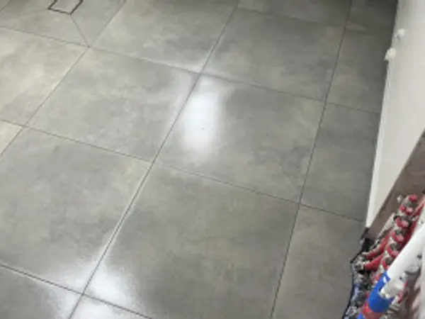
Suureformaadiline hall plaatpõrand eramu tehnoruumis.Hall plaatpõrand koos põrandaluugi ümber diagonaalselt lõigatud plaatidega.Mustriline punane vaipkate paigaldamisel suure saali põrandale.Betoonpõranda lihvimine ehitusjärgus ruumis.
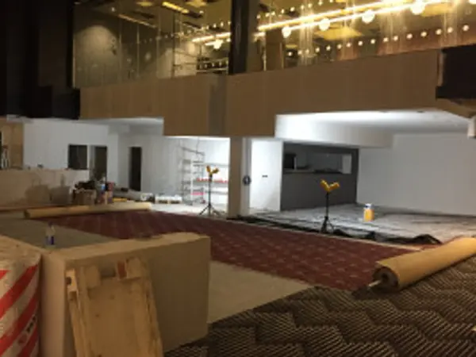
Punase vaipkatte rullid ja osaliselt paigaldatud kate suures kaubandusruumis.Paigaldatud punane mustriline vaipkate saali fuajees.Tumehall vaipkate paigaldamisel suures saalis.Hallsinised vaibaplaadid paigaldamisel suure saali põrandale.Osaliselt paigaldatud vaibaplaadid saalis.
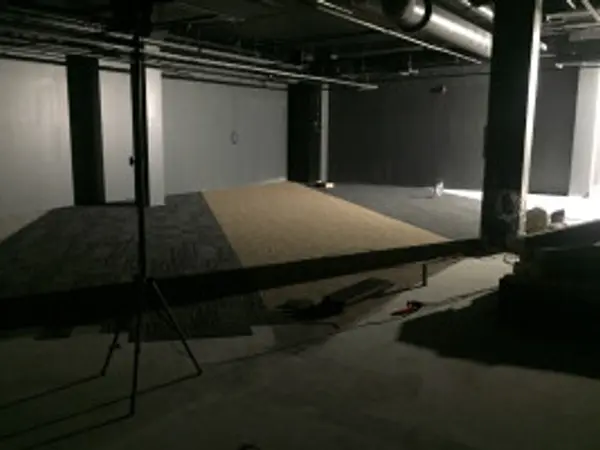
Suur saal ehitusjärgus, põrandal osaliselt paigaldatud tume pinnakate.
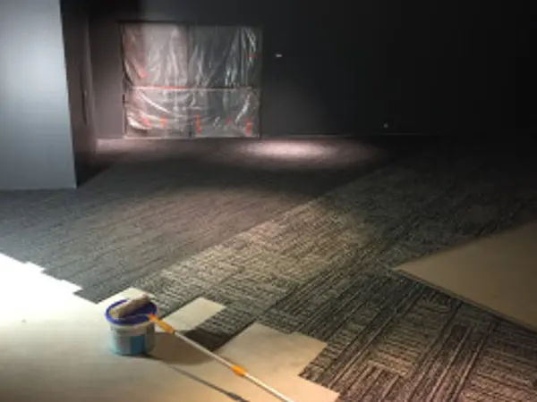
Vaibaplaadid osaliselt paigaldatud ruumis.Tumehall vaipkate laotatud suure saali põrandale.
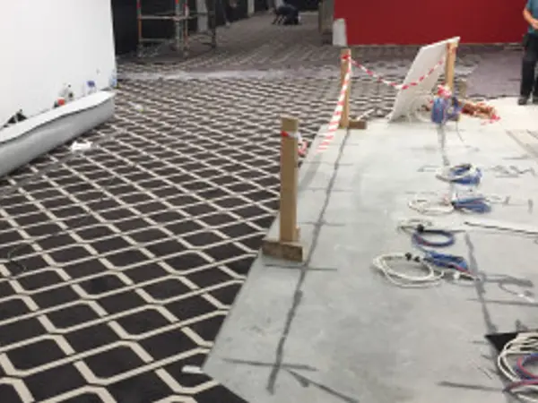
Mustriline must-valge vaipkate paigaldamisel.Geomeetrilise mustriga vaipkate ja lahti rullimata rull suure ruumi põrandal.
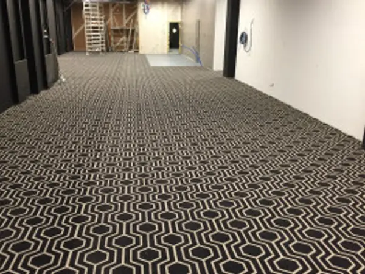
Valmis paigaldatud must-valge mustriline vaipkate koridoris.Vaipkatte rull lahti rullimisel, all liimitud aluspõrand.Kollase kärgmustriga vaipkate ja liimikamm paigaldustööl.Kärgmustriga vaipkate suure keskuse ruumis.Kinosaali valge ekraaniseina ees mustriline vaipkate.
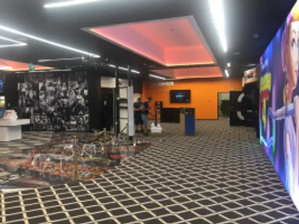
Kinofuajee mustriline põrand, seintel värvilised paneelid ja ekraanid.Kinosaali tume mustriline vaipkate enne toolide paigaldust.
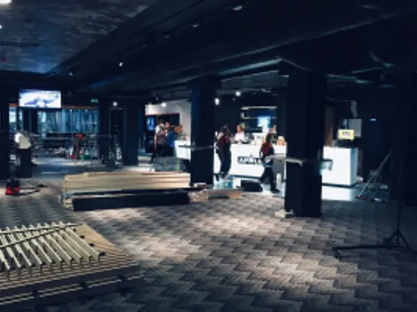
Suur ruum mustrilise vaipkattega.
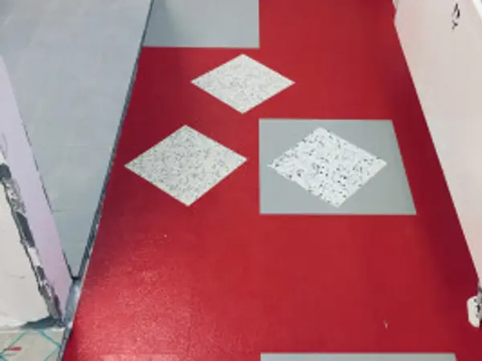
Punane pinnakate valge mustriga, paigaldamisel dekoorielemendid.Kuusnurksed valged plaadid ja vana puitpõrand üleminekukohas kõrvuti.
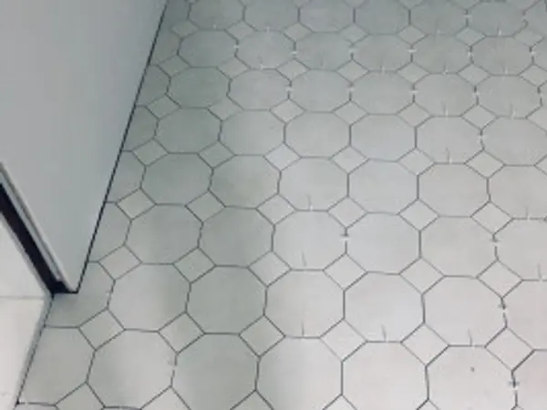
Suureformaadilised kuusnurksed helehallid plaadid ruumi põrandal.Kuusnurkne helehall plaatpõrand.Kuusnurkne plaatpõrand koos põrandaluugi raamiga.Ruum, kus vana puitpõrand on lahti võetud ja uus materjal kimpudes ootel.Lakitud tume puitpõrand ruumis pärast lihvimist.
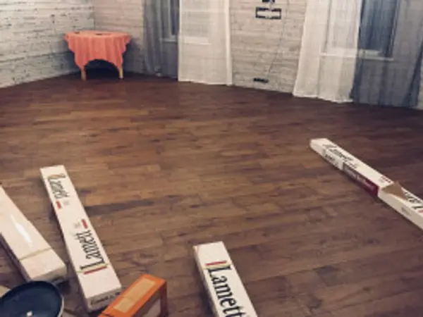
Kalasabamustris puitparkett paigaldamisel.
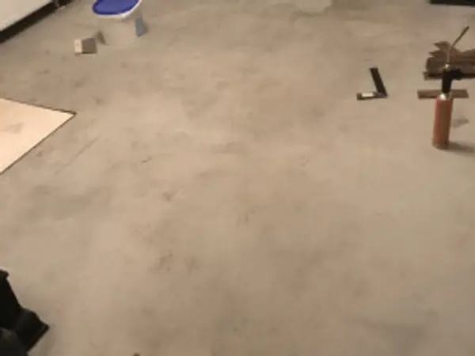
Aluspõrand enne katte paigaldust.Kalasabamustris parketi paigaldus pooleli.
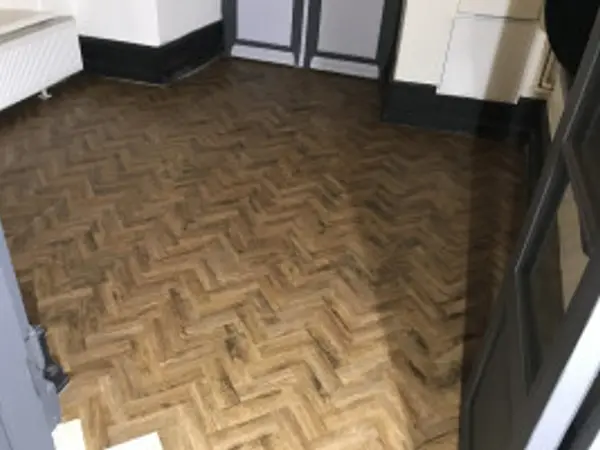
Kalasabamustris hele puitparkett valminud ruumis.
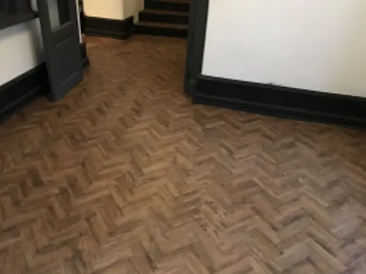
Kalasabamustris parkett valge seina ja tumeda põrandaliistuga ruumis.Kalasabaparkett tumeda põrandaliistu ääres lähivaates.Betoonaluspõrand enne katte paigaldust.
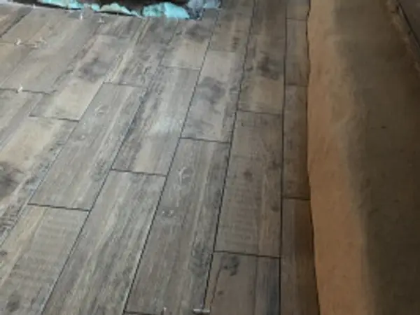
Puidumustriga pikad plaadid põrandal.
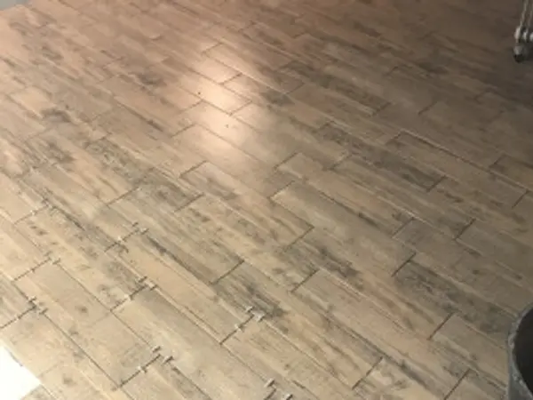
Puidumustriga plaatpõrand valminud ruumis.
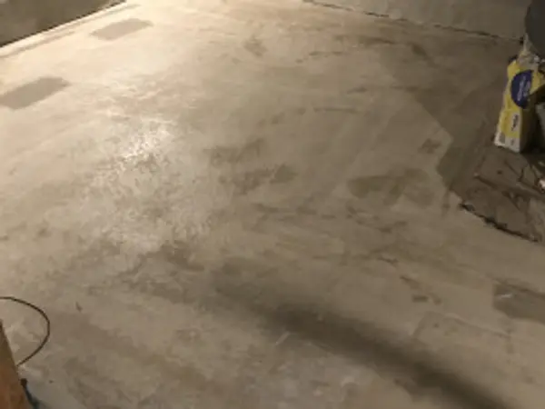
Tasandussegu kuivamas enne pinnakatte paigaldust.Läikiv puidumustriga plaatpõrand pärast paigaldust.
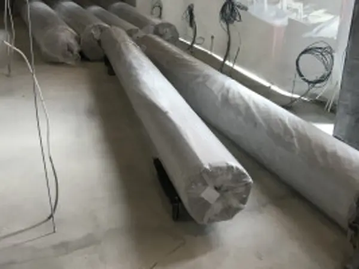
Vaipkatte rullid laos enne paigaldust.Munakivimustriga vinüülkate ja lahti rullimata rull ruumis.
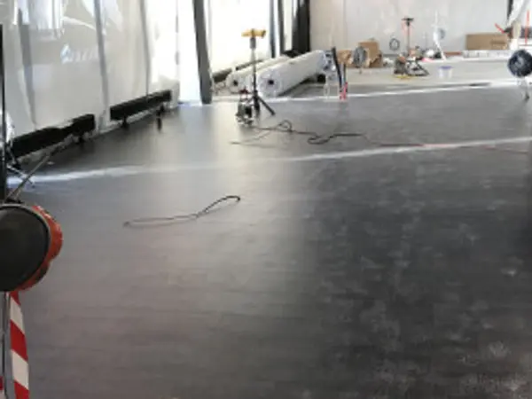
Tumehall pinnakate suures ruumis.Munakivimustriga kate ja tume vinüül kõrvuti paigaldamisel.Ühtlane hall vaipkate suure ruumi põrandal.
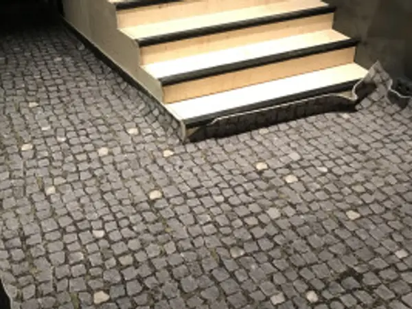
Munakivimustriga põrand ja selle kõrval puitservaga astmed.
Vannitoa renoveerimine lammutusest valmis ruumini: torustik, hüdroisolatsioon, plaatimine ja sanitaartehnika.
Taimemustriga seinaplaadid ja süvistatud riiulinišš duširuumis, must dušisegisti.
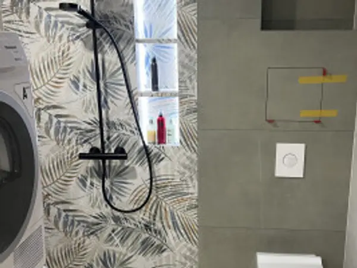
Taimemustriga plaaditud duširuum musta dušisüsteemiga.Vanniga vannituba valgete seinaplaatidega, taga aken ribakardinaga.Rippuv WC-pott ja klaasist dušisein beeži marmorimustrilise plaatpõrandaga vannitoas.
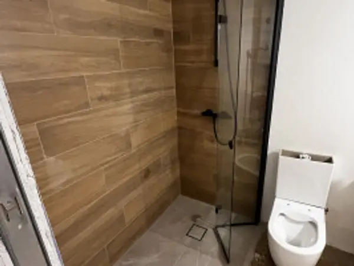
Puidumustriga seinaplaadid duširuumis, kõrval rippuv WC-pott ja klaasist dušisein.Must-valge kuusnurkne mosaiikpõrand ja valged seinaplaadid, seinal rippuv WC-pott.Valge marmorimustriga suureformaadilised plaadid ja must aktsentsein duširuumis.Duširuum valge marmorimustrilise põranda ja musta aktsentseinaga, seinas süvistatud nišš.
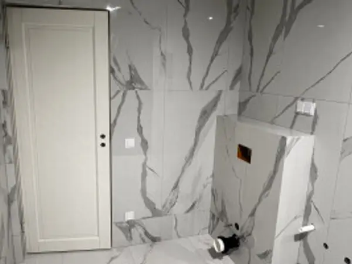
Marmorimustriga plaaditud vannitoa sein ja valge uks, paigaldus pooleli.
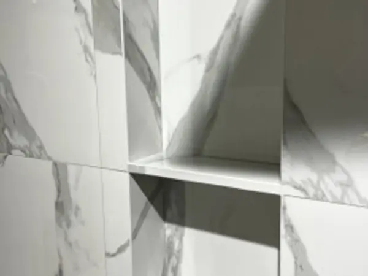
Valge marmorimustriline plaatsein koos süvistatud riiuliga duširuumis.Valge marmorimustriline plaatsein koos süvistatud nišiga.
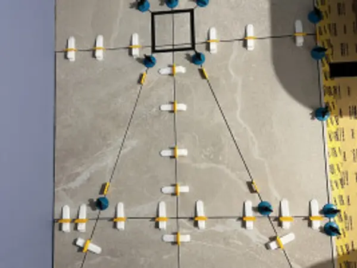
Marmorimustrilised seinaplaadid koos plaadiristide ja tasandussüsteemiga.Väike vannituba heledate plaatide ja musta dušikomplektiga, all katuseaken.
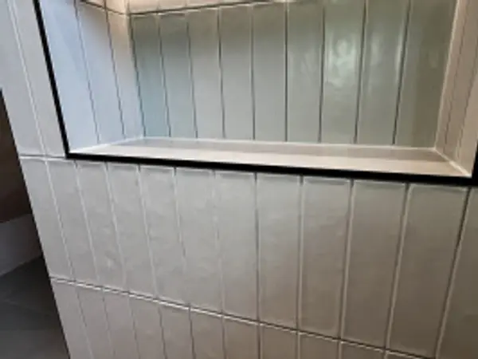
Valge plaaditud vannikast ja vertikaalses laotuses seinaplaadid.
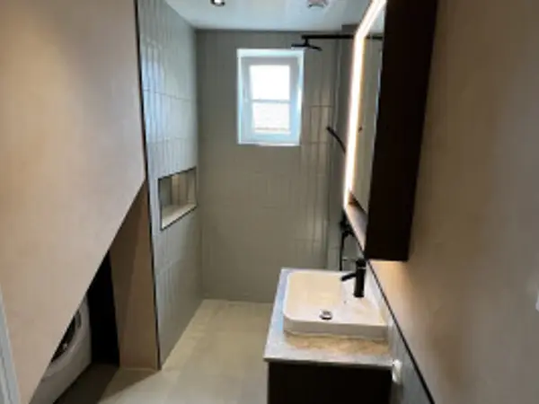
Kitsas vannituba pika valamu ja katuseaknaga.
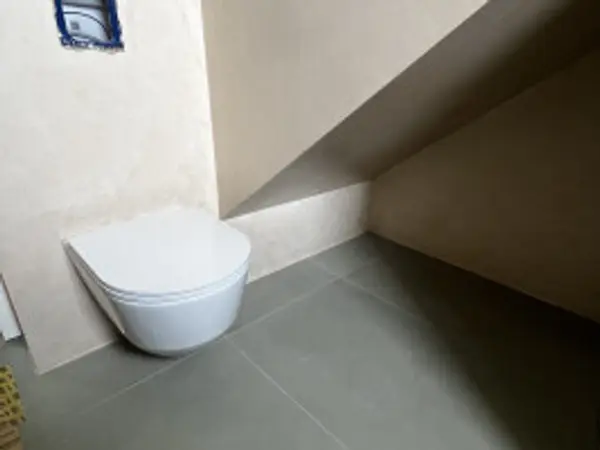
Rippuv WC-pott kaldlaega vannitoas, põrandal hallid plaadid.Vannitoa valamukapp peegli ja must-valge mosaiikpõrandaga.Must valamukapp suure peegliga, all must-valge mustriline põrand.Rohelise mustriga plaatsein ja rippuv WC-pott, seinal kuldne liist.
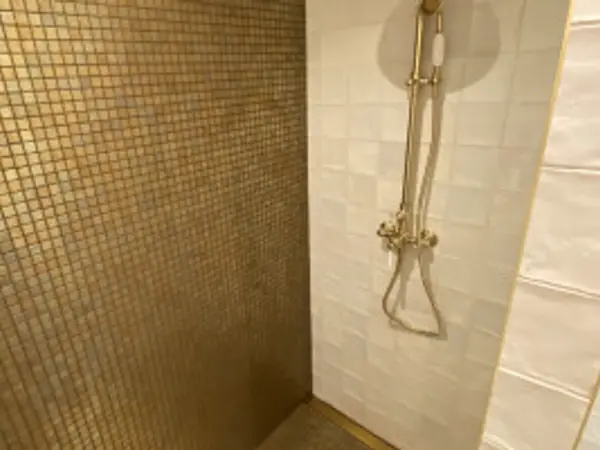
Kuldse mosaiigiga duširuum ja kuldne dušisüsteem.Heledad seinaplaadid kitsa akna kõrval, põrandal must-valge mosaiik.Heledad seinaplaadid vannitoa nurgas, taga aken ja ehitusjärgus ruum.
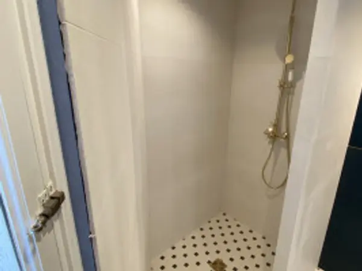
Duširuum kuldse dušisüsteemi ja mosaiikpõrandaga.
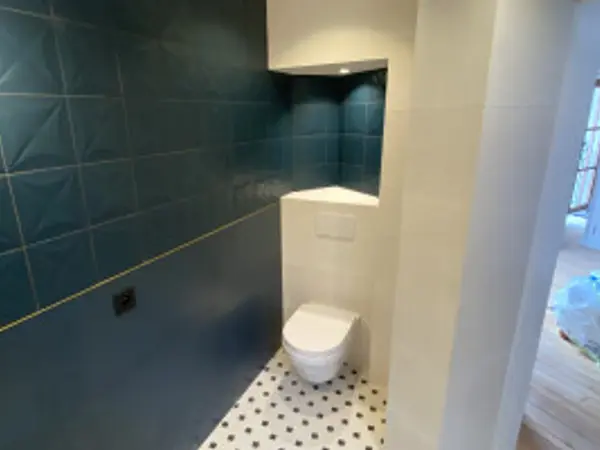
Rohelise mustriga plaatsein, rippuv WC-pott ja must-valge põrand.
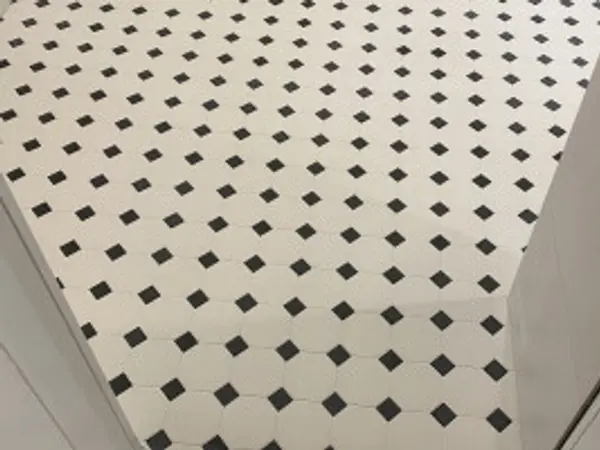
Must-valge mustriline mosaiikpõrand valminud vannitoas.Beež plaaditud valamupind ja tume uks vannitoas.
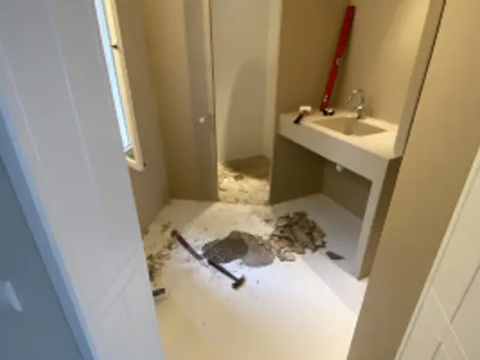
Vannituba ehitusjärgus, valamu paigaldatud ja põrandal ehitusprügi.
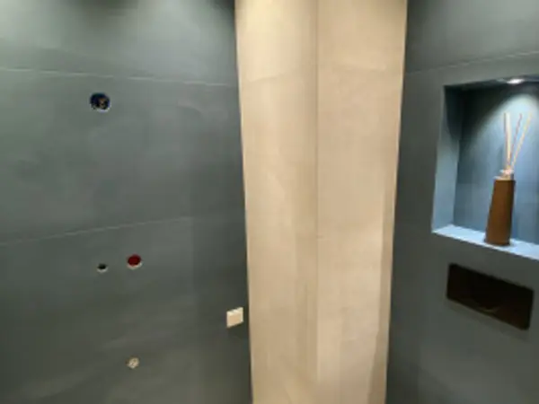
Hallid suureformaadilised seinaplaadid ja süvistatud nišš duširuumis.
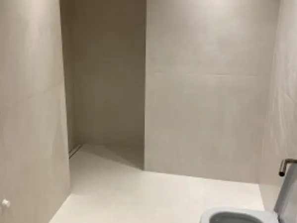
Beežid suureformaadilised plaadid duširuumi seinal ja põrandal.
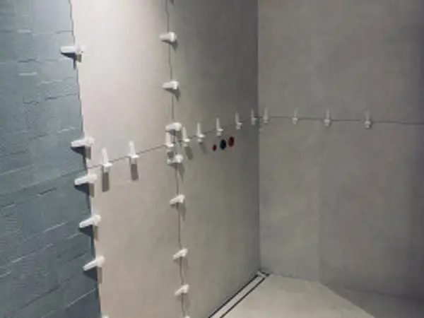
Duširuumi seinaplaadid tasandussüsteemi kiiludega paigaldamisel.Hall looduskivi imiteeriv plaatpõrand koos põrandatrapiga.
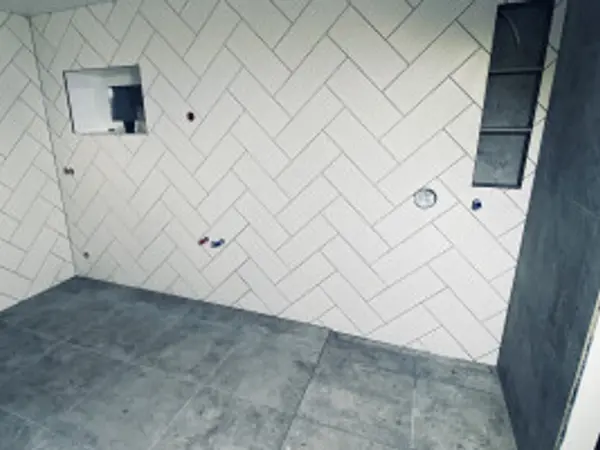
Valged kalasabamustris seinaplaadid ja hall plaatpõrand.
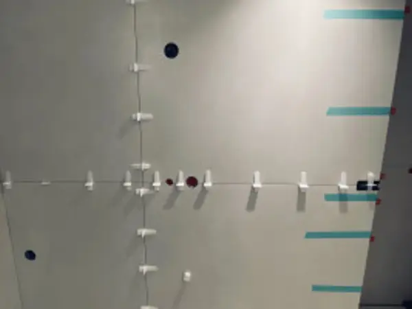
Suureformaadilised valged plaadid tasandusklambritega seinal.
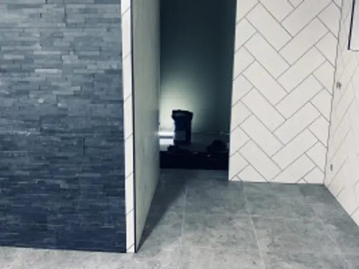
Tumehall lõhutud kiviga sein ja valged kalasabaplaadid duširuumis.Plaatpõrand tasandussüsteemi ja plaadiristidega paigaldamisel.Mustriline retroplaat duširuumi seinal ja must dušisüsteem.Vana WC-pott mustriliste põrandaplaatide keskel enne remonti.
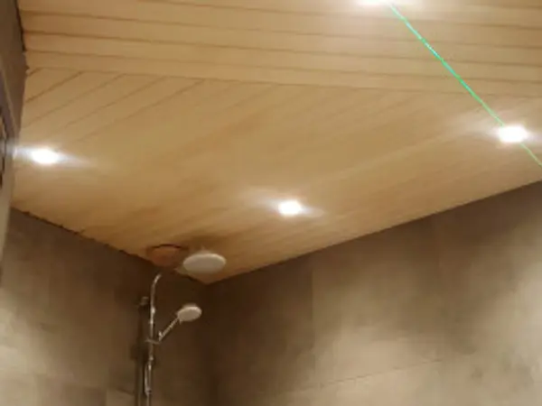
Puidutoonis lagi ja süvistatud valgustid duširuumi kohal.
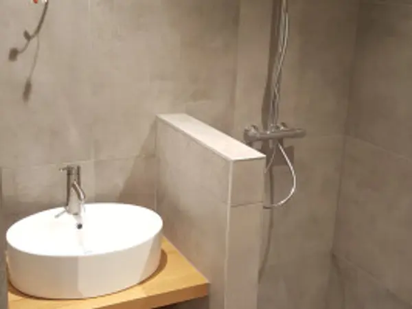
Ümar valamu puidust plaadil ja plaaditud sein taga.Helesinine plaatsein ja rippuv WC-pott valminud vannitoas.Valge plaaditud vannituba loputuskasti nupu ja riiuliga.
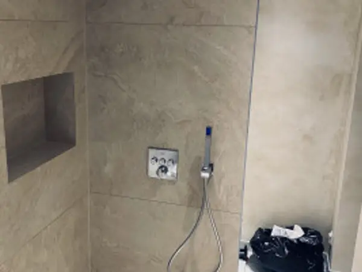
Beežid suureformaadilised plaadid, nišš ja peidetud segisti duširuumis.
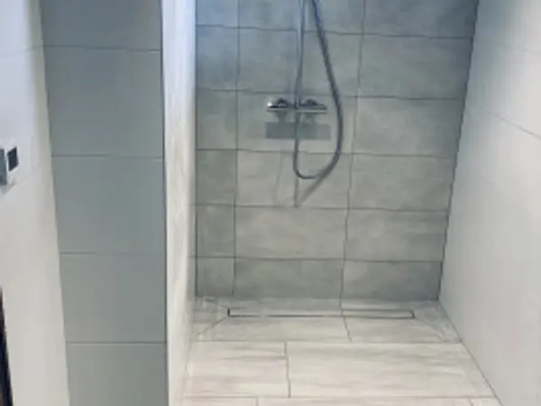
Hall plaaditud duširuum lineaartrapi ja dušisüsteemiga.
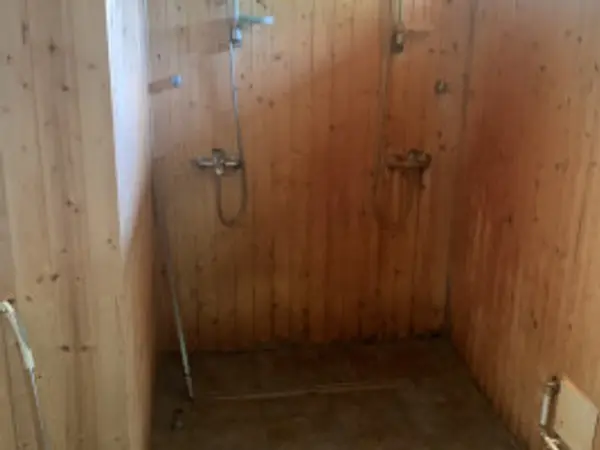
Puitseintega saunaduširuum kahe dušisegistiga.
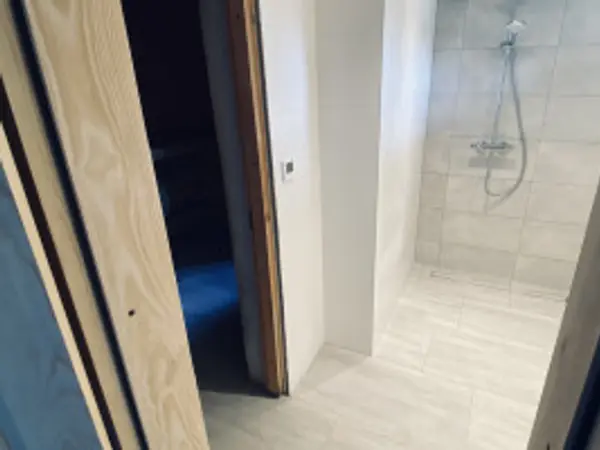
Vannitoa uks ja plaaditud sein valminud ruumis.
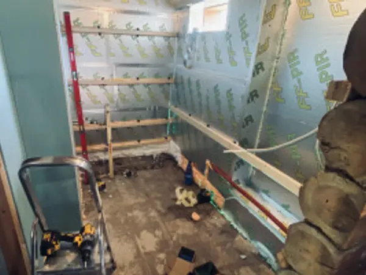
Vannituba lammutusjärgus, seinas torustik ja hüdroisolatsiooniplaadid.
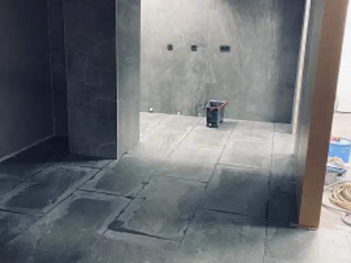
Tumehall plaatpõrand ja sein duširuumis, paigaldus lõppjärgus.Valge valamu tumedal kapil ja krohvitud sein taga.Krohvitud sein vannitoas enne plaatimist.Vana vannituba lammutamisel, seinaplaadid osaliselt maha võetud.
Eramu ehitus ja renoveerimine
38 fotot
Uued eramud ja vanade majade kordategemine, terve objekt või selle osa.
Hallilaudine eramu koos murukiviga sissesõiduteega.Ehitusjärgus elutuba kollaseks viimistletud seina ja suure klaasseinaga.Valge laudisega eramu ja selle ees murukividega kaetud plats.Vana tellissein ja puittalad renoveerimise käigus avatuna.Murukivide paigaldus eramu kõrvale, kivid osaliselt paigas.Murukiviga plats eramu sissepääsu ees, püsti terrassi kandepostid.Aluspinna ettevalmistus murukivide paigalduseks, liiv tasandatud ja vibroplaat kohal.Geotekstiil ja killustik aluspinnal.Eramu sissepääsu ette valatud betoonplaat.Valge eramu ja selle ees valminud puitterrass.Hallilaudine eramu ja selle ees valminud puitterrass.Terrassilaudade aluskonstruktsioon paigaldamisel.Puitkarkassiga eramu püstitatud seinte ja katusefermidega.Metallkarkass ja kollane soojustus ehitusjärgus hoonel.Puitkarkassmaja seinad ja katusefermid vundamendil.Puitkarkassi püstitamine.Valatud vundamendiplaat ja püstitatud karkassi nurk.Puitkarkassi seinad ehitusplatsil enne katuse paigaldust.Vundamendi armatuurvõrk enne valu.Värskelt valatud vundamendiplaat ja selle kõrval pinnas.Vundamendi armatuur ja torustik enne betoonivalu.Punased ja sinised küttetorud vundamendi soojustusel.Vundamendi soojustusplaadid paigaldatud ehitusplatsil.Vundamendi soojustusplaadid koos servaprofiiliga lähivaates.Ettevalmistatud ehitusplats enne vundamendi rajamist.Kaevikusse paigaldatud kollased kaablikaitsetorud.Geotekstiil ja liiv aluspinnal.Kopplaadur pinnasetöödel ehitusplatsil.Kollane kaablikaitsetoru kaevikus koos kaabliga.Pinnase teisaldamine kopplaaduriga ehitusplatsil.Ehitusplats vaiadega märgistatud enne kaevetöid.Ettevalmistamata krunt enne ehitustööde algust.Puitkarkassiga katusekonstruktsioon seestpoolt.Armatuurvõrk raketises enne betoonivalu.Raketis ja kollane soojustus vahelae valuks.Plokkmüürile paigaldatud puittala koos ankrutega.Puitfermid paigaldatud plokkmüürile.Katusefermid hoone kohal.
Siseviimistlus ja plaatimine
20 fotot
Seinad, laed ja plaaditud pinnad, mis jäävad lõpuks silma alla.
Krohvitud sisesein enne viimistlust.Suurte klaasakendega hoone välisilme, ees värskelt paigaldatud kivisillutis.Piklikud kuusnurksed seinaplaadid beežides ja hallides toonides.Graniidist välistrepp ja selle kõrval kivisillutis.Kaarjas letiesine plaatimisel valgete piklike plaatidega, all näha hüdroisolatsioon.Klaasseinaga hoone välisilme, ees kivisillutis ja armatuurivardad.Piklike kuusnurksete plaatidega kaetud sein siseruumis.Ukseava lävepaku ja profiili paigaldus betoonpõrandal, väljas kivisillutis.Kaarjas sisesein ehitusjärgus, pind krohvitud ja ootab viimistlust.Kivisillutis hoone ees, keskel tume kattega ala.Kaarjas letiesine kaetud piklike kuusnurksete plaatidega.Tume plaaditud sissepääsuala ja selle ümber kivisillutis.Kaarjas seinakonstruktsioon ehitusjärgus ruumis, põrandal märgistus.Mustriline tapeet paigaldamisel siseseinale.Rohelise plaadiga sein ja kollase teibiga märgistatud elektripaigaldus.Tumeda lõhutud kiviga sein ja valge kalasabaplaat kõrvuti.Suureformaadiline hall plaat seinal ja tume tellissein taga.Puitplokkidest laotud dekoratiivsein ruumis.Valge kaminaümbris ja puitparkett valminud elutoas.Kaminaümbris ja sile valge sein valminud ruumis.
Vesi ja kanalisatsioon
18 fotot
Eramute vee- ja kanalisatsioonitorustik, nii uus kui ka vana väljavahetamine.
Geotekstiiliga kaetud kaevik enne torustiku paigaldust.Oranž kanalisatsioonimahuti paigaldatud kaevikusse.Kanalisatsioonitoru kaevikus, servad kaetud geotekstiiliga.Kanalisatsioonimahuti kaevikus, kõrval pinnase tihendamiseks vibroplaat.Oranž kanalisatsioonitoru paigaldatud kaevikusse.Oranž mahuti rihmadega paigaldusvalmis, all liivapadi.Geotekstiiliga vooderdatud kaevik imbväljaku jaoks.Killustikuga täidetud kaevik ja selle servades kanalisatsioonitorud.Killustikpadi ja soojustusplaadid kaevikus.Vundamendi soojustusplaadid ja servaprofiil paigaldatud liivapadjale.Veetorustiku ühendus ja sulgeventiil kaevikus.Avatud põrandaava torustiku vahetuseks, all seisev vesi.Kanalisatsioonitorud püstiku jaoks liivases aluspõrandas.Beežide plaatidega duširuum ja lineaartrapp valminud tööna.Sooja vee boiler ja torustik puitseintega tehnoruumis, põrand avatud.Avatud puitpõrand torustiku paigalduseks, all must isolatsioon.Boiler ja torustik vanni kõrval puitseintega ruumis.Põrandalaudade alla paigaldatud kanalisatsioonitorud ja killustik.
Küte ja ventilatsioon
30 fotot
Kütte- ja ventilatsioonisüsteemide paigaldus eramutes vastavalt projektile.
Punased ja sinised veetorud paigaldatud seina enne kinnikatmist.Peidetud loputuskastide raamid ja veetorud kipsseina taga.Sooja vee boiler ja siniste torudega jaotuskollektor tehnoruumis.Põrandakütte torustik paigaldatud ruumides enne põrandavalu.Põrandakütte torustik ruumide vahel enne tasandusvalu.Põrandakütte jaotuskollektor tehnoruumi seinal.Põrandakütte torustik paigaldatud eramu vundamendi soojustusele.Vundamendile paigaldatud põrandakütte torustik enne betoonivalu.Põrandakütte torustik ja soojustus vundamendil enne valu.Messingist küttekollektor manomeetri ja torude ühendustega.Põrandakütte kollektorikapp ehitusplatsil enne paigaldust.Põrandakütte jaotuskollektor kapis koos sulgeventiilidega.Punased ja sinised veetorud tulemas läbi seina, kõrval puitraam.Vee- ja küttetorud paigaldatud soojustatud vundamendile.Punased ja sinised torud betoonpõrandal enne tasandusvalu.Põrandakütte torustik alumiiniumkattega soojustusel.Põrandakütte torustik ja jaotuskollektor ruumis enne valu.Põrandakütte torustik kaarena alumiiniumsoojustusel.Tihedalt paigaldatud põrandakütte torustik soojustusplaatidel.Punane paisupaak ja küttekollektor puitseinal tehnoruumis.Sinised veetorud ja ventiilid tehnoruumi seinal.Veefiltrid ja jaotuskollektor kipsseinal paigaldatuna.Torustik betoonseinal enne ruumi viimistlust.Põrandakütte torustik vundamendil, ümber puitraketis.Paisupaak ja veetorustik puitseintega tehnoruumis.Küttesüsteemi kollektor, paisupaak ja filtrid tehnoruumis.Küttesüsteemi sõlm koos manomeetrite ja filtritega seinal.Veefiltrid ja jaotustorustik plokkseinal.Kitsas tehnoruum torustiku ja seadmetega, põrandas ava.Torustik ja seadmed viimistlemata seina ees.
Terrassid ja varjualused
4 fotot
Puittööd õue ja majja, enamasti kohapeal mõõtude järgi paika pandud.
Puitterrass metallpiirdega ja puidust trepp eramu küljel.Musta karkassiga varjualune eramu sissepääsu ees talvel.Tumedaks viimistletud puitterrass eramu ukse ees talvisel ajal.Tumedatest laudadest ribisirm eramu terrassi varjeks.
Välitööd ja vundament
50 fotot
Vundament, betoon, katus, aed ja tänavakivi, ehk kõik see, mis jääb maja seintest väljapoole.
Värskelt valatud betoonpõrand hoone sees enne viimistlust.Vundamendiplokkidest müür kaevikus.Vundamendisoojustus paigaldatud ja märgistatud enne betoonivalu.Sinine ehitusaed vana tellishoone ees.Killustikpadi ja vundamendi servaprofiil enne valu.Sillutuskivide paigaldus maja kõrval.Silutud betoonpõrand siseruumis kohe pärast valu.Plokkidest vundamendimüür ja selle ümber killustik.Vundamendi soojustus ja armatuurivõrgu märgistus ehitusplatsil.Puidust aed ja selle ees tume kattega plats.Betoonplaat valatud maja ette.Suureformaadiline hall betoonkivisillutis paigaldatud.Betoonpõrand siseruumis pärast lihvimist.Vundamendiplokkide paigaldus kaevikusse.Betoonvalu raketise ettevalmistus öisel ehitusplatsil.Killustikuga kaetud plats vana tellishoone ees.Geotekstiil ja killustik aluspinna ettevalmistusel.Värvitud betoonpõrand ja sein siseruumis.Torustik ja kaablikaitse kaevikus kivise pinnase sees.Puitkonstruktsioon betoonalusel öisel ehitusplatsil.Ehitusplats postidega märgistatud.Must geomembraan laotatud liivasele aluspinnale.Kaetud betoonpõrand siseruumis.Vundamendi servaprofiil ja soojustus kaevikus.Puitkonstruktsioon ümmargusel alusel ehitusjärgus.Virnastatud betoonelemendid ehitusplatsil.Silutud betoonpõrand siseruumis koos põrandatrapiga.Torustik ja soojustus kaevikus vundamendi kõrval.Killustikuga plats vana hoone ja puitaia vahel.Vundamendi soojustusplaat ja servaprofiil sügiseses pinnases.Vundamendivorm paigaldatud liivasele alusele.Virnastatud soojustusplaadid kollase servaga ehitusplatsil.Värskelt valatud betoonpõrand siseruumis.Plokkidest vundamendimüür ja selle kõrval pinnas.Kaevik killustikuga ja betoonist servakiviga.Vundamendivorm liivasel alusel enne valu.Sile betoonpõrand pärast lihvimist.Läikiv lihvitud betoonpõrand ruumis.Betoonpõrand deformatsioonivuukidega suures ruumis.Lihvitud betoonpõrand suures ruumis.Betoonist välistrepp maja sissepääsu ees.Välistrepi hüdroisolatsioon ja märgistus enne viimistlust.Vundamendi raketis ja soojustus valu ootel.Värskelt valatud vundamendiplaat koos ankrutega.Must geomembraan ja raketis vundamendiplaadi all.Vundamendi raketise paigaldus.Killustikuga täidetud vundamendiala ja tellingud.Metalltoed ja killustik hoone seina ääres.Killustiku tasandamine kollase latiga vundamendi jaoks.Valatud vundamendiplaat rohelisel krundil.
Alltöövõtt
Kohad, kus meie tööd saab ise vaatamas käia
Pinnakatteid oleme alltöövõtjana paigaldanud ka avalikes ruumides. Nendesse kohtadesse saab igaüks ise sisse astuda.